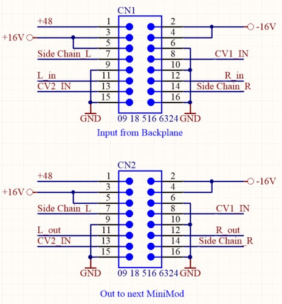

Designing 100-series modules
The Rodec 100 module format is an open standard created to combine the flexibility of modular audio design with the reliability of professional engineering. Inspired by the signal chain structure of a DAW channel strip, it allows audio creators to build fully customized analog workflows. Each module functions as its own processing block and can be chained together in endless configurations, encouraging innovation not only from Rodec but also from third-party manufacturers. This collaborative ecosystem ensures compatibility, quality, and a consistent professional finish across all designs.
Behind this format lies a clear set of mechanical and electrical guidelines that make designing your own modules both practical and rewarding. From standardized front panel dimensions and machining tolerances, to PCB footprints, pin layouts, CV/sidechain support, and housing integration with 500-series adapters and the Rodec ONE, every detail has been carefully documented. Whether you are a manufacturer, DIY builder, or audio professional, these specifications open the door to developing new creative tools within a stable and future-proof framework.
See https://documentation.rodec.com/rodec-100-series for more details